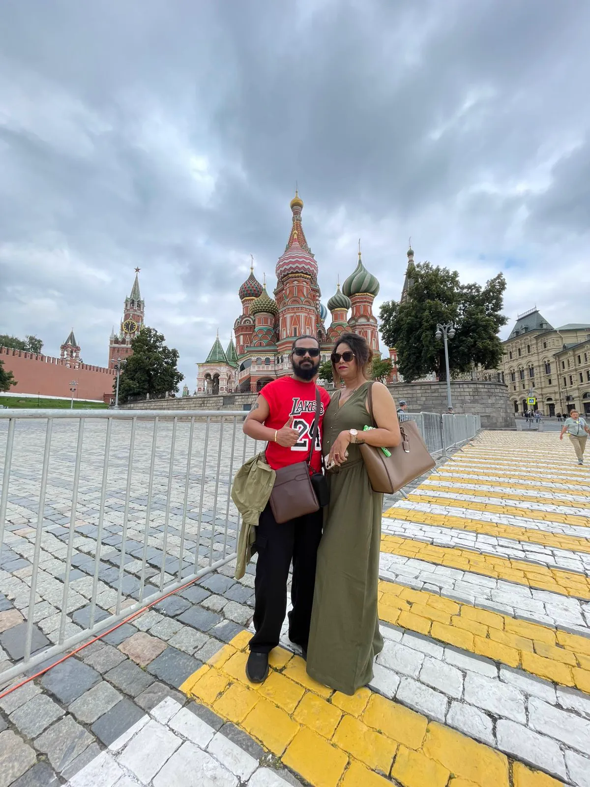
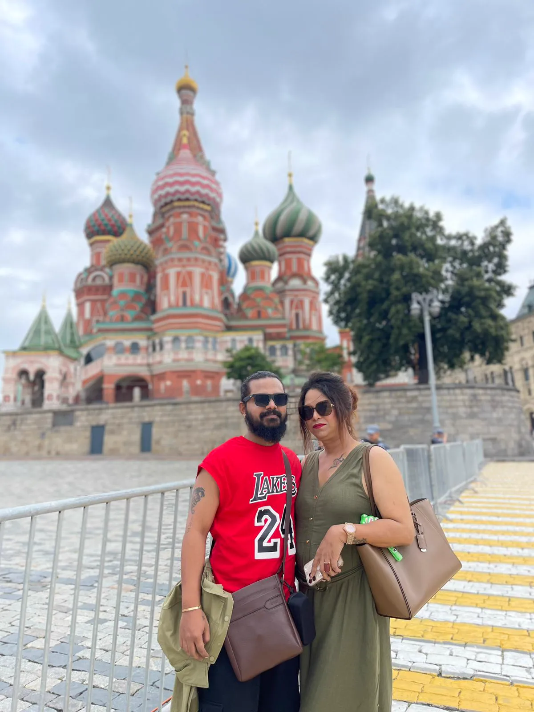
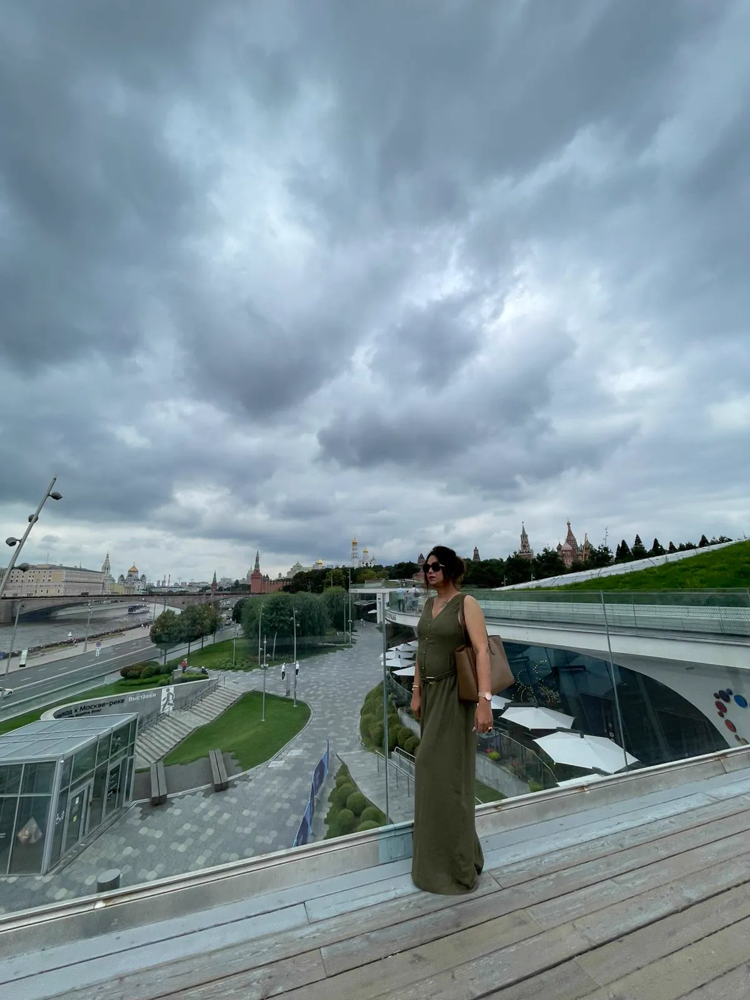

Столица и отправная точка большинства путешествий
Москва
Красная площадь ночью, Большой театр и станции метро, похожие на дворцы.
Лучшие месяцы
- май
- июн
- июл
- авг
- сен
- дек
Почему стоит поехать
Привет! Я Саша, ваш гид по Москве.
Это мой родной город, так что спрашивайте о чём угодно. Начнём с мест, которые точно нельзя пропустить?
Главное

Кремль и Красная площадь
Соборы, Оружейная палата и вечерняя площадь в огнях подсветки.

Храм Василия Блаженного
Девять церквей под знаменитыми куполами, каждая с уникальной росписью внутри.
Дворцы московского метро
«Комсомольская», «Маяковская» и «Площадь Революции»: люстры, мозаики и бронза по цене обычного билета.

Парк «Зарядье»
Парящий мост над Москвой-рекой с видом на кремлёвские стены за спиной.
Вечер в Большом театре
Балет или опера на исторической сцене. Билеты на главные спектакли разбирают заранее.
Третьяковская галерея
Тысячелетие русского искусства — от древних икон до Репина и Левитана.
Новодевичий монастырь
Монастырь из списка ЮНЕСКО у тихого пруда и кладбище, где покоятся великие люди России.
ВДНХ
Советские павильоны, позолоченные фонтаны и грандиозный павильон «Космос».
Даниловский рынок
Грузинские хачапури, узбекский плов и русские соленья под одной крышей.
ГУМ и советское мороженое
Пассажи со стеклянными сводами на Красной площади и фирменный пломбир в вафельном стаканчике.
Настоящий русский ужин
Пельмени, борщ и блины в ресторане, где их готовят по всем правилам.
Вечерняя Москва
Речная прогулка мимо подсвеченного Кремля, а затем панорама города с Воробьёвых гор.
Чем заняться
Прогулка по Парящему мосту
Говорит путешественник — Панорама Москвы-реки и Кремля с консольного моста в парке Зарядье.
Прогулка у собора Василия Блаженного
Путешественники на Красной площади на фоне куполов собора Василия Блаженного.
Экскурсия по станциям метро
Говорит путешественник — Туристы осматривают великолепные мозаики и архитектуру на станциях московского метро.
Знаменитое мороженое в ГУМе
Говорит путешественник — Дегустация знаменитого пломбира в вафельном стаканчике в исторических линиях ГУМа.
Прогулка по Соборной площади
Говорит путешественник — Прогулка по древней Соборной площади за стенами Московского Кремля.
Обед в кафе на Арбате
Говорит путешественник — Отдых на открытой веранде уютного кафе на пешеходной улице Арбат.
Панорама с Воробьёвых гор
Говорит путешественник — Вид на панораму столицы со смотровой площадки у здания МГУ.
Прогулка в Парке Победы
Говорит путешественник — Прогулка вдоль каскада фонтанов и аллей мемориального комплекса на Поклонной горе.
Когда ехать
Удобнее всего приезжать с конца весны до начала осени. А в декабре вас ждут огни иллюминации и пушистый снег, если вы не боитесь морозов.
- янв
- фев
- мар
- апр
- май
- июн
- июл
- авг
- сен
- окт
- ноя
- дек
Зима
дек, янв, фев
Снег, новогодние огни и каток на Красной площади.
Весна
мар, апр, май
В марте тает снег, а к маю парки зеленеют. Парад Победы 9 мая.
Лето
июн, июл, авг
Длинные дни, веранды и парки. Самый оживлённый сезон.
Осень
сен, окт, ноя
Золотая листва в сентябре, хмурое небо к ноябрю и открытие театрального сезона.
Как добраться
- Аэропорт
- SVO
- Часовой пояс
- Europe/Moscow
- Местное время
- --:--
- Разница с Москвой
- --
Отзывы путешественников
Здесь появятся отзывы путешественников ROTW.
Связаться с нашей командой в Москве